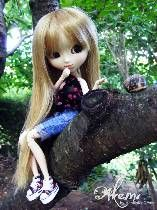
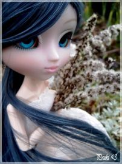
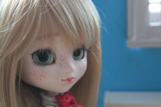
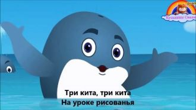
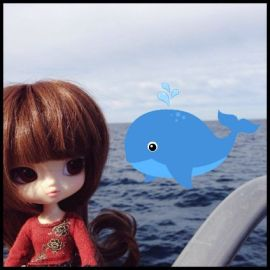

Между небом и землёй,Где никто нас не найдёт,Поцелую я тебя,Если очень повезёт!Через горы и моряЯ всю землю обойду.
На паа-а-астбище!Давай, давай. Йем йемЙем йемЙем йемЙем йем
Наа-а... пастбище...
Города где я бывал,По которым тосковал,Мне знакомы от стен и до крыш.Снятся людям иногдаГолубые города.Кому - Москва, кому - Париж,
Любви быстрокрылый век,Исчез, словно талый снег.Затих, как осенний сад,Его не вернуть назад.Не вернуть назад.
Припев:Еду, еду, еду я по светуУ прохожих на виду.Коли я машиной не доеду,Значит, я пешком дойду.
Песни у людей разные,А моя одна на века.Звездочка моя ясная,Как ты от меня далека!

Улитки, улитки, домик на спине.
Улитки, улитки прочные.
Улитки, улитки, домик на спине
Сколько нам с тобой неба синего,Моря пенного, тела бренного,Чашу полную жизнь отмерила!Выбирай, выбирай - у реки два берега.
Добрый и ласковый Ленин
Смотрит с портрета на нас —
Как мы рисуем, как мы играем,
Как хорошо нам сейчас.
Перед зеркалом девчушка лет пяти,
Хохотушка и вертушка лет пяти,
Корчит рожицы, не хочет отойти!

На афинских бульварах,
На пирейских причалах,
Где сердца молодые всегда горячи,
От влюбленных слыхали
Молодые гречанки
Не слышны в саду даже шорохи,
Всё здесь замерло до утра.
Eсли б знали вы, как мне дороги
Подмосковные вечера.
Открывай скорее, школа,Дверь для нас.Пусть звенит звонок весёлыйХоть сейчас.

Мы дошкольниками были,Мы ходили в детский сад.Мы из глины мастерилиИ лошадок, и зайчат...А теперь, а теперьОткрывай нам, школа, дверь!
Забытой тропинкой я шла за рекой,И эхо манило меня за собой,Волшебные звуки в лесной тишинеНа крылышках нежных летели ко мне.


Вьюга. Вьюга, ты моя подруга.Вьюга. Вьюга. Снегом замело!
Готовим историю про кита в прозе.
Киты-кошкиКо мне залетают,Когда солнце тонетВ тёмных водах огней.Киты-кошкиМеня понимаютИ забираютПолетать, как во сне.